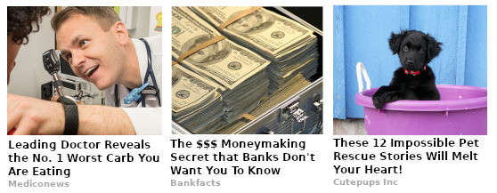
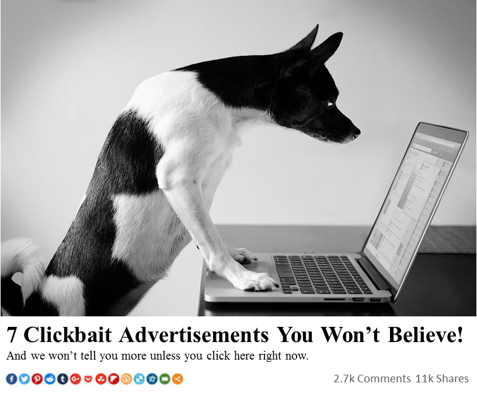
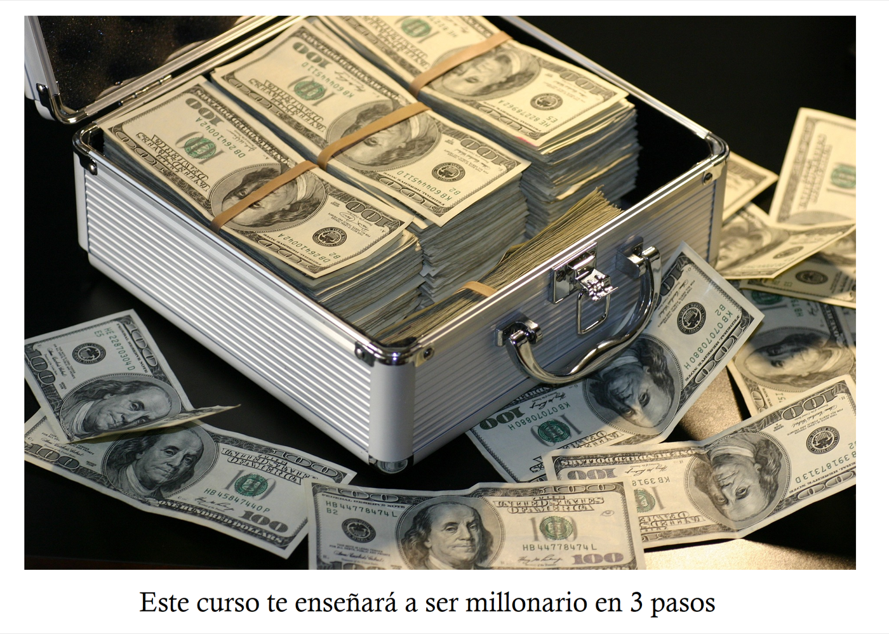
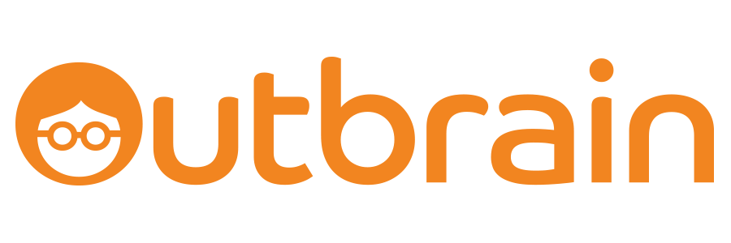
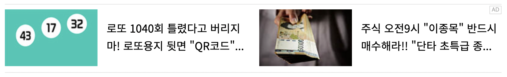

You know this grid. It lives at the bottom of news articles and recipe pages and the far end of the internet, under a faint gray label that says "Around the Web" or "You May Also Like" or "Sponsored Stories." And you know the strange tug it produces: a half-second where your eyes snag on a photo you cannot quite identify, a flicker of what is that, and the smallest impulse to find out. Most of the time you scroll on. Sometimes you do not.
Nobody threw the word "chumbox" at the format as an insult. The industry coined it for itself, after the bucket of ground-up, rancid fish guts a fisherman dumps overboard to draw sharks up from the deep. That is the format's own theory of how it works. The images are bait, tuned to slip past the thinking part of you and hit something older and quicker underneath.
This is a field guide to that bait. What the images are, sorted into kinds. Why each one works, in terms of the real machinery in your head it is built to trip. And who gets paid when you bite. The psychology below is not folk wisdom; it is a well-documented account of human attention, which is what makes it a little unsettling that it has been aimed so precisely at selling you a slideshow about toenail fungus.
why you cannot look away
The hook is in your head
The feeling is the whole product. In 1994 the economist George Loewenstein wrote the paper the entire clickbait industry rests on, though he had no idea. Curiosity, he argued, is not a pleasant appetite for knowledge. It is a form of cognitively induced deprivation that arises from the perception of a gap in your knowledge or understanding. In plain words: curiosity is a kind of discomfort. It opens the instant you notice there is a specific thing you do not know, and it itches until you close it.
An image you cannot identify opens that gap faster than any headline can, because recognition happens before reading. Your visual system is built to name what it sees automatically, and when it meets a shape it can almost place but cannot, it does not shrug. It strains. The chum is engineered to sit in that almost-place: a lump that might be food or might be a tumor, a close-up with the scale cues filed off. The discomfort is manufactured, and the click is sold to you as the cure.

Loewenstein noticed one more thing the format would later live or die by. Curiosity, he wrote, is intense, transient, tied to impulsivity, and tends to disappoint once satisfied. That is the entire life cycle of a chum click. It is intense (you must know), transient (it passes the moment you keep scrolling), impulsive (you click before you decide to), and disappointing once satisfied (the payoff is always garbage). The bait does not have to be good. It only has to open the gap.
The gap is a reward, chemically. Put curious people in an fMRI scanner and high curiosity lights up the brain's dopamine circuitry, the caudate, the nucleus accumbens, the same midbrain machinery that anticipates money or food. The part that matters, from work by Kang and colleagues in 2009 and Gruber and colleagues in 2014, is when it fires. It fires during the wait for the answer, before you get it. The reward is in the anticipation. A withheld answer parks you in that pre-payoff state and holds you there. The tug you feel toward the unreadable photo is that circuit, lit up and unresolved.
There is one more lever underneath the picture, and it explains why the image does the work rather than the words. Psychologists call it the realism heuristic: we treat a photograph as evidence and a sentence as a mere claim. A picture feels like proof that the thing is real. So the chumbox loads its promise into an image, where your guard is lowest. As the Michigan State researcher Maria Molina put it, studying exactly these ads: in fewer words, imagery drives clicks.
That is the engine. Everything below is a body built around it.
a field guide to the bait
The bestiary
There is no neat specimen jar for this. The bait mutates constantly, and a single grid (like the one at the top of this page) usually mixes half a dozen kinds at once. But almost every chum image is a variation on one of ten species. Once you can name them, the grid stops being noise and turns into a catalogue of the ways a picture can pick a lock in your head.
An extreme macro of something organic and ambiguous, shot so close the scale cues vanish. A wrinkle of skin that reads, for half a second, as a body part it is not. The image withholds the one fact you need: what am I looking at.
In the wild: the tight close-up captioned "Odd Trick Destroys Erectile Dysfunction," cropped so near that your brain cannot decide what it is looking at. This is the purest form of the species, and every other kind below is a flavor of it.
Toenails, skin tags, swollen feet, dark spots, a thing under the skin, "what this does to your gut." Disgust evolved as a disease-avoidance reflex, which means it is fast, involuntary, and very hard to override. You flinch and you look at the same time, and the looking is the sale.
In the wild: "New Diabetes Discovery Leaves Doctors Speechless." The grossness is the attention mechanism doing its job, not a lapse of taste.
A single pill, a clove of garlic, a cheap household trick, headlined with a villain: "Doctors Hate Him," "Dermatologists Are Furious," "Big Pharma Doesn't Want You To Know." The curiosity gap (which trick?) is wrapped in an underdog story that casts you as the plucky insider about to beat the system.
The crudeness is engineered. The Harvard researcher Michael Norton has pointed out that the MS-Paint ugliness is deliberate: polished art reads as a corporation, but bad art reads as one frustrated person who figured something out, which is more believable and more clickable. Slick would break the spell.
A split frame: sad and heavy on the left, triumphant and thin on the right. Or "you won't believe what she looks like now." Your eye is built to detect difference, and a side-by-side hands it a difference with a hole in the middle: how did they get from A to B? That hole is the gap, and the click promises the method.
In the wild: "Yoga Pants Fails Of The Rich And Infamous," weight-loss splits, "10 Selfies Gone Totally Wrong." The implicit promise is that the transformation is available to you, too.
A famous face under an ominous or secret frame: a final photo, a spotted-leaving, a what-really-happened, a fake endorsement. Because you already carry a parasocial bond with the celebrity, the gap feels personal, like news about someone you know. Add scandal or death (high arousal, faint taboo) and the itch turns urgent.
In the wild: "The Cameraman Wasn't Expecting To Capture That On Live TV." This is also the category that drifts most easily into outright fakery, which is where regulators eventually got involved.
A blur, a pixelation, a black bar, a "they don't want you to see this." The censor strip is not hiding the bait. The censor strip is the bait. It advertises, with total precision, that there is a secret exactly where your eye has landed, and adds the small rebellious pleasure of clicking past a forbidden line.
Why it works: a blur tells you two things at once, that something specific is here, and that you in particular are not allowed to see it. That doubles the deprivation Loewenstein described.
"Drivers in [your city] are furious." "[Your state] moms are getting paid." "People born before 1970, read this." Your own location and demographic are permanent attention priorities, the cocktail-party reflex that snaps your head around when someone says your name across a room. The "city" is injected from your IP address, so it is always, eerily, yours.
In the wild: "New Rule in Brooklyn, NY." Specificity also borrows the realism heuristic: a precise detail feels true, even when it was filled in by a script a millisecond ago.
Fans of cash, gold bars, a luxury watch, "if you have $1,000 in savings," "banks hate this." Money is a universal high-arousal cue, and the framing works both throttles at once: the hope of a gain and the fear of a loss. Loss-aversion means the fear of missing out is worth roughly twice the equivalent hope, so the dread does most of the lifting.
In the wild: "The $$$ Moneymaking Secret that Banks Don't Want You To Know," "My Journey from Rags to Riches. Watch now."

Impossible scale, a melted-smooth face, a six-fingered hand, a composite that does not quite obey physics. Anything that violates what your brain predicted is, by definition, worth a second look, and the uncanny valley adds a low hum of unease that, like disgust, is hard to walk away from. Generative tools made this the fastest-growing species: impossible bait, now infinite and nearly free.
In the wild: the melted, too-smooth faces and impossible composites that image generators now spit out by the thousand. An almost-coherent image keeps your recognition system grinding, which holds the gap open by other means.
A human face, shot tight, eyes wide, mouth open in shock, looking straight down the barrel of the camera. You find faces before you find anything else on a screen, and a direct, camera-facing gaze measurably holds the eye longer than an averted one. The expression then triggers a flicker of emotional contagion and poses its own little question: what are they reacting to?
In the wild: this is the same instinct YouTube thumbnails were built on. The wide-eyed shocked face is just the cheapest reliable way to win the first glance.
follow the money
The machine behind the grid
None of this would exist if it did not pay, and it pays at a scale that is hard to hold in your head. The grids are filled by a handful of content-recommendation networks, the two biggest being Taboola and Outbrain, which sit between publishers (who rent out the space at the bottom of their articles) and advertisers (who buy your click). Taboola alone claims something on the order of 400 billion recommendations served every month.

The economics are an arbitrage, and once you see it the ugliness of the images finally makes sense. The play is to buy your attention cheaply and resell it for slightly more. As one industry analyst put it, if you can pay a network one cent for a click to your page and then earn two cents showing real advertising on that page, that is a juicy margin. Multiply a fraction of a cent by billions of clicks and you have a real industry.
Where does the click actually land? Usually on a page built for no reason except to show you ads: a fifty-slide listicle where each slide carries five ad units, a thin "article" wedged between banners, a search-results page dressed up as content. The industry quietly calls this layer "made for advertising," and an estimated ten billion dollars a year flows into it. One structural fact explains every design choice in this piece. The money is made after the click, downstream, on the junk page. So the image at the front door never has to deliver on anything. It is tuned one hundred percent to win the click and zero percent to satisfy you once you have clicked.
The image only has to win the click. It never has to be worth it.the one idea that explains the whole grid
And it is not an American problem. The grammar is identical in every language: the same shocked faces, the same withheld secrets, the same crude urgency, translated and re-skinned for every market on earth.

the same rails carry poison
The dark turn, and the law
A delivery system this good at bypassing judgment does not only sell diet pills. The same boxes, on the same rails, carry health scams, fabricated celebrity stories, and outright disinformation, because the network is paid by the click and is, as one digital executive bluntly told Vice, actively disincentivized from policing its own supply: controversy gets people to click on their ads. A fraud auditor in the same piece put the role plainly: these platforms both help people discover false information and help the false-information sites make money.
The catalogue of what rides the grid is its own small horror: tips to "empty your bowels," a "miracle enzyme," a fake claim that a nasal spray cuts infection risk by 78 percent, slideshows of celebrities who used to be ugly, and, depending on the site, political disinformation and conspiracy theories sitting one tile over from the coconut-oil ad.
Regulators have crept in at the edges. In 2015 the U.S. Federal Trade Commission ruled that an ad's format is deceptive if it misleads you about the fact that it is an ad, which is why the chumbox now wears that whisper-quiet "Sponsored" label in the corner. In 2024 the FTC went after the format's ugliest corner directly, banning fake reviews and, pointedly, fake celebrity endorsements and AI-generated testimonials, with penalties that can run past fifty thousand dollars a violation. The law is real, but it is slow, and the grid is fast.
a short history of bait
This is very old
The chumbox feels native to the internet, but the instinct it farms is ancient, and the commercial form has a clear lineage. The lurid woodcut on a penny-dreadful, the screaming headline of yellow journalism, the carnival banner promising the thing inside the tent, the supermarket tabloid: every one of them is a picture-plus-promise built to pull a passing stranger across a threshold. The chumbox is that same trade, made programmatic and infinite.
The modern visual form crystallized in the late 2000s with "One Weird Trick" and "Doctors Hate Him," went everywhere in the early 2010s, and got its name and its first real taxonomy in 2015, when the writer John Mahoney annotated a chumbox for The Awl and defined chum, beautifully, as decomposing matter that triggers a purely neurological brain-stem response in its target. He was describing fish bait. He was also describing us.
The form got so recognizable, so fast, that the internet did the only thing it does with anything that recognizable: it turned the format into a meme, the top-hatted crab who got rich with "one simple trick" (he forces children to work in his factories), the embalmed Lenin who "has been 53 since 1924." The joke is affectionate, but it is also the clearest proof of how mechanical the thing is. You can recite the formula. You can parody it in your sleep. And it still works on you, because knowing the magician's method does not stop the trick from tugging at a reflex that never consults your knowledge before it fires. The newest chapter is the AI one: the bait is drifting toward the abstract and the uncanny, cheap and endless, and it is only going to get stranger.
So the next time the grid catches you, and it will, take the half-second it is counting on and spend it differently. Notice the snag. Notice the small discomfort that is asking to be relieved. Notice that the whole apparatus, the billion-dollar machine and the century of lineage behind it, is aimed at one tiny involuntary muscle in your attention. And then, having seen the hook clearly, do the one thing the entire system is built to prevent. Scroll on.
Sources and notes
The psychology and the law below rest on primary sources (peer-reviewed journals, FTC releases). The numbers on the industry are mostly company self-reports and trade-press analysis, and are labeled as claims where that matters. Where the science is genuinely unsettled, I have said so rather than rounded it off.
The mind
- Loewenstein (1994), the information-gap theory of curiosity
- Kang et al. (2009), curiosity and the brain's reward circuit
- Gruber, Gelman & Ranganath (2014), dopamine and anticipation
- Palanica & Itier (2012), direct gaze holds the eye longer
The machine
- Fast Company (2023), the chumbox design secret
- AdExchanger / Ebiquity (2023), the arbitrage economics
- Margins (2019), Taboola, Outbrain and the chum supply
The dark side and the law
- Vice (2021), chum boxes and disinformation
- FTC (2015), native-advertising enforcement policy
- FTC (2024), the fake-reviews and fake-endorsement rule
The name and the history
- Mahoney, The Awl (2015), "A Complete Taxonomy of Internet Chum"
- Chumbox, the overview and the surveys it cites
- Know Your Meme, "One Weird Trick / Doctors Hate Him"
On the images
- Every image here is freely licensed (Creative Commons or public domain), from Wikimedia Commons, and is a clean illustration of the genre. The real chumbox ads they stand in for remain the property of their advertisers and are not reproduced.
- Illustrative chumbox row · Lord Belbury, CC BY-SA 4.0
- The "won't tell you unless you click" ad · GreenMeansGo, CC BY-SA 4.0
- The money-flex example · El Rolo Ueeqee, CC0
- Korean clickbait row · Xnou, CC BY-SA 4.0
- Taboola logo · Wikimedia Commons; Outbrain logo · Giladdv, CC BY 4.0
{kind=link}
{kind=link}
{kind=link}
{kind=link}
{kind=link}
{kind=link}